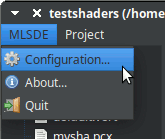
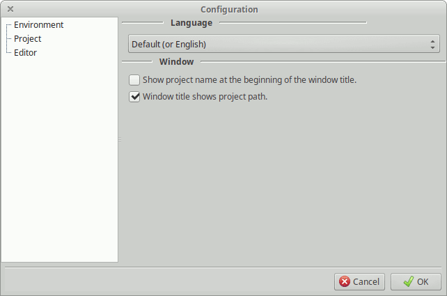

To open the Configuration Dialog just select MLSDE > Configuration... on the
main menu.

The configuration dialog is divided in two parts: The configuration sections on the left and the configuration options on the right.

Select the section you want to configure on the left with mouse. Then change
the options on the right. Once you finish, click on the Ok button at the
bottom to save the changes or Cancel to abort them.
Some options need to close and open MLSDE to be effective. In such cases a message box will appear.
If you have problems with the configuration, you can reset it by removing the configuration file at the user directory.